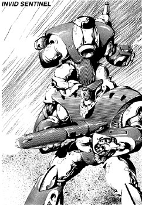

The following material is from
THE THIRD INVID
WAR, a fan supplement by
Dave Deitrich and
Chris
Meadows. Please feel free to use, copy, and distribute
it as you see fit. All we ask is that you give proper credit to us and do not
claim that it is your own work. Comments and suggestions are welcome.
THE INVID SENTINEL
BACKGROUND

The Invid Sentinel is unique among the new Invid mecha, because unlike
the other new mecha designs the Sentinel seems to have been created to
complement an existing mecha instead of replace it. The Sentinel
appears to be designed specifically to work alongside the original Invid
Enforcer. Appearing in late 2043, the Invid Sentinel seemed to take
over the job as "Hive Guard", freeing the more advanced Enforcers for
more delicate and detailed work. Invid Sentinels soon became the
standard guard unit for all of the Invid's strongholds, working in
Hives, Slave Farms, Genesis Pits, etc. Sentinels are commonly found
with Enforcers, with the latter usually in command of the former.
The Invid Sentinel is human-sized and human-shaped, much like the
Enforcer. However, the Sentinel design appears much more combat-
oriented than the older Enforcer design. The Sentinel is far bulkier
than its cousin, and seems to have much thicker armor than the Enforcer.
The increased armor has done nothing to slow the mecha down; in fact,
the Sentinel is actually faster than the old Enforcer! This is due to a
much larger thruster on the back of the mecha, and the addition of
several concealed vernier jets at strategic locations on the outside of
the armor. The Sentinel also has powerful legs that are slightly longer
than the Enforcer's, allowing it to run faster and jump farther than the
older mecha.
The head and sensor eye of the mecha is shaped like a snout, similar to
the Enforcer's head. However, the snout is smaller and more concealed.
The arms of the mecha look almost identical to those of the Enforcer.
One new addition is a large cannon located on the right shoulder. This
cannon appears to be a particle-beam cannon and is the main weapon of
the new mecha. The cannon swings upward when not in use, and rotates
downward when about to be fired. The cannon is mounted on a swiveling
turret, and can move 45 degrees downward, 90 degrees upward, and 45
degrees to either side. It apparently cannot point behind the mecha.
The main weapon of the Sentinel is the new PBC on the shoulder, but it
also has the same weaponry as the Enforcer. There is a concealed laser
in each forearm (identical to the Enforcer's) and the Sentinel can use
the same energy rifle and energy shield that the Enforcer does. Another
new weapon is a pair of concealed mini-missile launchers on each arm.
Each mini-missile launcher holds one missile (for a total of 4) and pops
open when the Sentinel is about to fire. These launchers are located on
the sides of the arms, while the concealed laser is located on the tops
of the arms.
Invid Sentinels are piloted by Stage Three Invid, and are thus NOT
capable of independent thought. While they are capable of doing simple
tasks by themselves (such as patrolling the hive and guarding
prisoners), they require a Stage Four or higher Invid to command them in
complex tasks. Their first instinct in a battle will be to protect
their commander.
SCHEMATICS
 Click on the icon to the left to view the schematics of the Invid Sentinel,
based on data collected by REF Intelligence.
Click on the icon to the left to view the schematics of the Invid Sentinel,
based on data collected by REF Intelligence.
RPG STATS
Invid Name: "Gamir"; REF Nickname: "Terminators"
Vehicle Type: Power Armor
Crew: One; Stage Three Invid Pilot
M.D.C. BY LOCATION
Hands (2) 10 each
Forearms/Lasers (2) 35 each
Missile Launchers (4) 20 each
Upper Arms (2) 40 each
Legs & Feet (2) 60 each
Jet Thruster (rear) 40 each
Particle Beam Cannon 45
Energy Rifle 10
Energy Shield 150
* Head & Sensor Eye 20
** Main Body 150
Note: No Reinforced Pilot's Compartment
Notes:
- *
- The sensor eye is the most vulnerable place on the Invid's mecha
body. Destruction of the sensor eye will kill/destroy the mecha and
pilot (goes right through crew compartment). However, it is a small
target protected by surrounding shielding, thus, to hit it the
player/character must make a called shot and is at -3 to strike.
- **
- Depleting the M.D.C. of the main body will shut the mecha down
completely. There is no reinforced pilot's compartment in the
power armor, so the Invid pilot inside will be blown to pieces.
SPECIFICATIONS
- Flight:
- Hover to 250 mph (400 kmph) with an altitude of 6000 ft (1828
m). Cruising Speed is usually about 100 mph.
- Running:
- 60 mph (96 kmph) maximum.
- Jumping:
- 35 ft (10.6 m) up or across without jet boosters, 150 ft (45.8
m) with thruster boost.
- Height:
- 9 ft (2.7 m)
- Width:
- 5 ft (1.4 m)
- Length:
- 3 ft (0.9 m) with PBC raised, 4 ft (1.2 m) with PBC lowered.
- Weight:
- 750 lbs (339 kg)
- Cargo:
- Can carry up to 1.5 tons.
- Abilities:
- Pilot Mecha - 75%
- Recognize Human Machinery - 40%
- Prowl - 45%
- Detect Ambush - 45%
- Detect Concealment - 55%
- Track - 55%
WEAPON SYSTEMS
- PARTICLE BEAM CANNON. The main weapon of the Invid Sentinel is a
compact but powerful particle beam cannon mounted on the right
shoulder. The cannon is mounted on a swiveling turret, and can move
45 degrees downward, 90 degrees upward, and 45 degrees to either
side. It cannot point behind the mecha.
- Primary Purpose: Assault
- Secondary Purpose: Defense
- Range: 3000 ft (900 m)
- Damage: Blast does 1D6x10 M.D. Bursts are not possible.
- Rate of Fire: Due to an automatic cool-down cycle, the PBC can fire a
maximum of TWICE per melee round.
med shot. (see Modern Weapon Proficiencies)
- Payload: Unlimited
- Bonuses to Strike: +2 to strike, plus protoculture targeting bonuses.
- FOREARM LASERS. The Sentinel has a laser cannon built into each arm.
The design is similar to those on the Enforcer, but is slightly more
powerful. Both are fixed forward, and can only shoot in the
direction that the arm is pointed. Destruction of the forearm also
destroys the laser.
- Primary Purpose: Defense
- Range: 600 ft (182 m)
- Damage: A single blast does 3D6 M.D. A burst does 4D6 M.D.
- Rate of Fire: Equal to hand-to-hand attacks (four per melee). A
burst is considered to be one attack, but is not as accurate as a
single aimed shot. (see Modern Weapon Proficiencies)
- Payload: Unlimited
- Bonuses to Strike: +2 to strike, plus protoculture targeting bonuses.
- MINI-MISSILE LAUNCHER. Two concealed mini-missile launchers are
built into each arm of the Sentinel. The launchers are normally
concealed when not in use, and pop open when ready to fire.
- Primary Purpose: Assault
- Secondary Purpose: Anti-Aircraft, Anti-Cyclone
- Missile Type: Almost always Plasma Mini-Missiles.
- Range: 1 mile (1.6 km)
- Mega-Damage: 1D6x10 M.D.
- Rate of Fire: One at a time or in volleys of 2, 3, or 4 (all).
- Payload: 4 missiles.
- Bonuses to Strike: +3 to strike (but no protoculture bonuses)
- (OPTIONAL) ENERGY RIFLE. This hand-held energy rifle is identical to
the one used by the old Enforcer mecha. When held, it patches into
the Sentinel's energy supply for power. The rifle can be attached to
the back of the mecha when not in use.
- Primary Purpose: Assault/Defense
- Range: 2000 ft (609 m)
- Mega-Damage: 4D6 M.D. per blast or 5D6 M.D. per burst.
- Rate of Fire: Equal to hand to hand melee attacks (four per melee).
A burst is considered one attack, but is not as accurate as a
single shot.
- Payload: Unlimited.
- Bonuses to Strike: +2 to strike, plus protoculture targeting bonuses.
- (OPTIONAL) ENERGY SHIELD. This large, round energy shield is
identical to the one used by the old Enforcer mecha. It can be
stowed on the back or held in hand (usually the left hand).
- Primary Purpose: Defense
- Range: Self/hand to hand
- Mega-Damage: Can be used to hit or ram an opponent. Damage is same
as hand-to-hand.
- Special Features: M.D.C. of shield is 150. Adds a bonus of +3 to
parry and can be used to parry/block energy blasts and mini-
missiles. Size: 4 ft (1.2 m) round. M.D.C. capability (150
M.D.C.) can be recharged at a rate of 20 M.D.C. per hour.
- Note: The shield can NOT function unless attached to the body armor.
The Sentinel armor can NOT be modified for human use.
- HAND-TO-HAND COMBAT. The mecha's powerful reflexes makes the
Sentinel a good hand-to-hand combatant.
- Attacks Per Melee: Four
- Hand to Hand Bonuses: +2 to strike, +2 to parry (+5 with shield), +3
to dodge on the ground, +4 to dodge when flying at any speed, +4
to roll with a punch, fall, or impact.
- Types of Attacks: Punch: 1D6 M.D. Power Punch: 2D6 M.D. (counts as
two attacks). Crush with Hand: 1D4 M.D. per melee round. Kick:
1D6 M.D. Leap Kick: 2D4 M.D. Body Flip: 1D4 M.D. Body
Block/Ram: 2D4 M.D., counts as two attacks.
This document was originally converted to HTML by
Joshua Megerman
megermjs@newton.physics.drexel.edu
st92bb10@post.drexel.edu